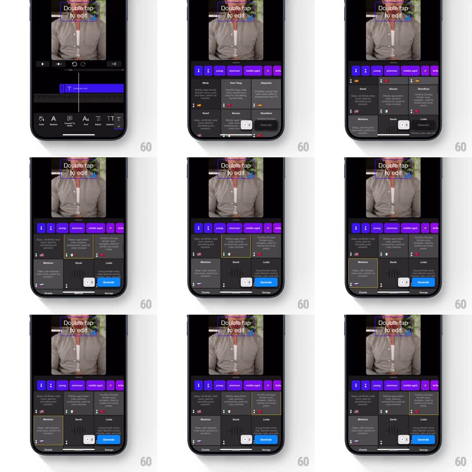

Media
Frame-by-frame

Rebuild this interaction 1:1: Riveo's voice selection sheet - a bottom sheet of voice cards with filter chips, smooth grid scrolling, live waveform previews on the selected voice, and a fluid slide-down dismissal.

Rebuild this interaction 1:1: Riveo's voice selection sheet - a bottom sheet of voice cards with filter chips, smooth grid scrolling, live waveform previews on the selected voice, and a fluid slide-down dismissal.
## Integration
Integration: stack-agnostic spec - springs given as stiffness/damping, timed motions as duration + curve; map every value to your framework and animation library of choice.
## Scene
Riveo's dark editor with the video preview ("Double tap to edit") up top. A bottom sheet opens over the lower half: a row of purple filter chips at its top, then a two-column grid of voice cards (Molly, Kera Young, Alejandra, David, Alessia, Shanshan, Mortimer, Sarah, Lucia), each with a name, short description, and a language flag. The selected card gets a bright border and shows an animated waveform; a blue "Generate" button stays pinned at the bottom.
## Motion spec
Pattern: scrolling voice grid with selection and preview, gesture-driven.
- The sheet slides up (spring stiffness 300 damping 26), cards fading in with a 30ms row stagger.
- The grid scrolls vertically with natural momentum and rubber-banding at the ends; the chip row pins to the sheet's top while scrolling.
- Tapping a card selects it: the border draws in (200ms) and its waveform bars animate (looping, 8 bars, randomized heights at 90ms intervals); the previous card's waveform stops.
- Tapping Generate confirms; swiping down on the sheet's grabber drags it 1:1 and releases into a slide-down dismissal (350ms, ease-in) or snaps back (spring stiffness 320 damping 26) under the threshold.
## Calibration
- Only one waveform plays at a time; selection is single and explicit.
- The Generate button never scrolls - pinned above the home indicator.
## Reduced motion
Sheet fades; waveform shows a static level.
## Don't miss
- The editor behind stays visible and dimmed above the sheet - this is a modal layer, not a new screen.
- Voice cards keep their flag and description visible at every scroll position; nothing lazy-loads late.